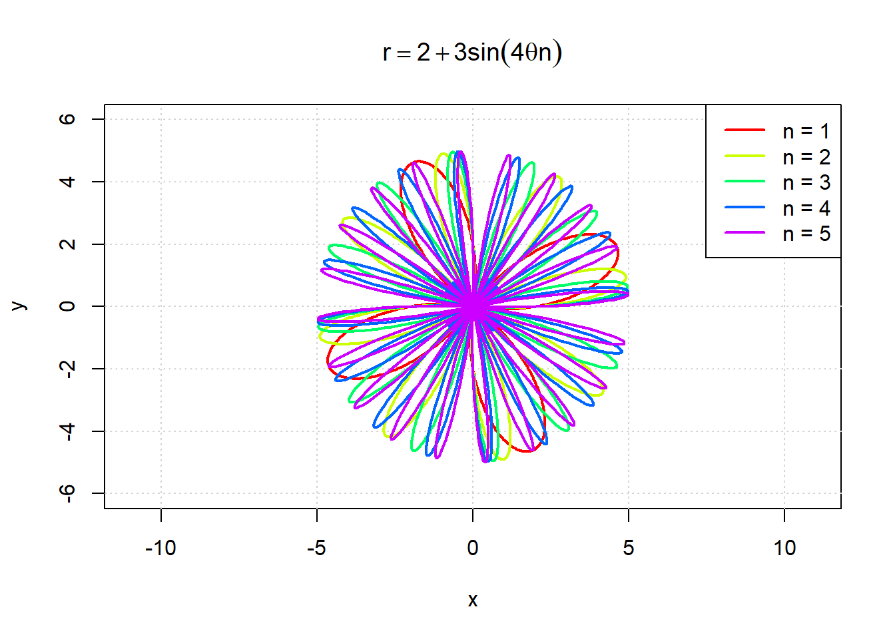
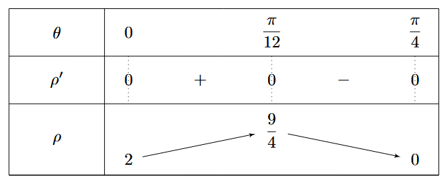
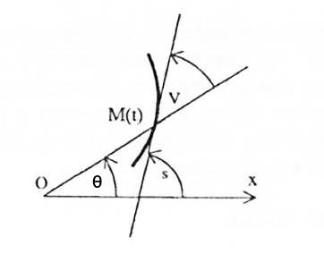
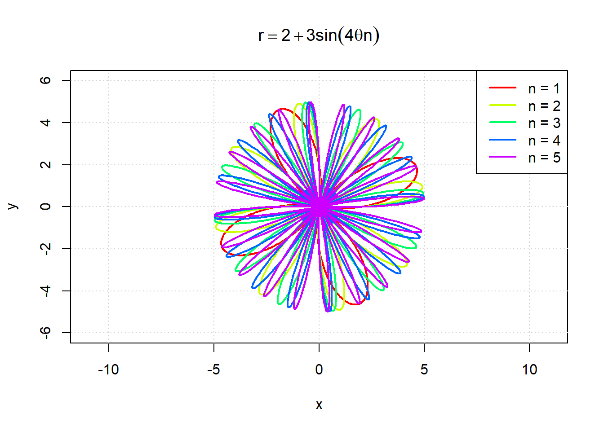
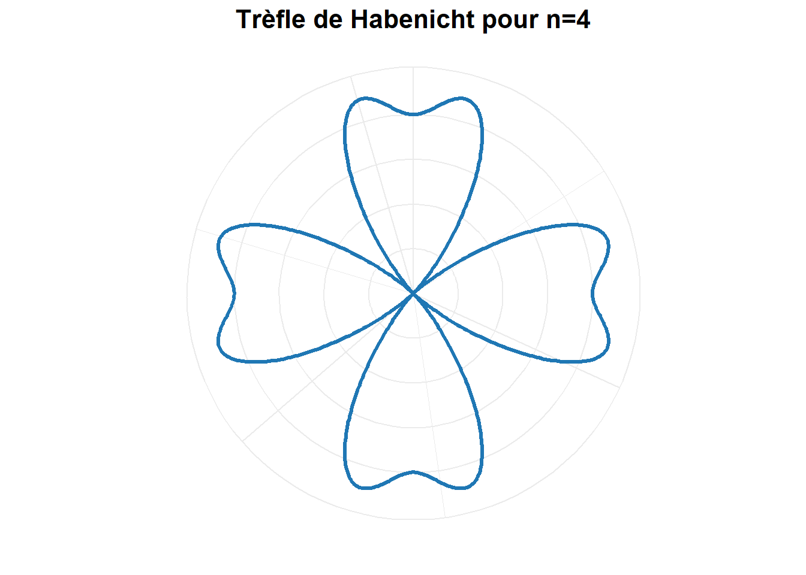

theta <- seq(0, 2*pi, length.out = 1000)
rho <- 1 + cos(4*theta) + sin(4*theta)^2
x <- rho * cos(theta)
y <- rho * sin(theta)
plot(x, y,
type="l",
asp=1,
main="Trèfle de Habenicht pour n=4")
Nous allons étudier le Trèfle de Habenicht définie par son équation polaire. Son équation polaire est \[\rho = 1 +\cos\left(n\theta\right) + \sin^2\left(n\theta\right)\] L’objectif est de tracer le Trèfle de Habenicht pour \(n = 3\) ou \(n = 4\), selon la chance espérée ! 🍀
Nous choisirons ici de travailler dans le cas “chanceux” 🍀 \(n=4\)❗️
L’équation polaire est alors \[\rho = 1 +\cos\left(4\theta\right) + \sin^2\left(4\theta\right)\] Le domaine de définition est \[D_1 = \mathbb{R}\]
On remarque que \(\rho\) est périodique de période \(\dfrac{\pi}{2}\). En effet on peut écire
\[\begin{align*} \rho\left(\theta+\frac{\pi}{2}\right) &= 1 +\cos\left(4\theta + 2\pi\right) + \sin^2\left(4\theta + 2\pi\right) \\ &= 1 +\cos\left(4\theta\right) + \sin^2\left(4\theta\right) \\ &=\rho\left(\theta\right) \end{align*}\]
On peut alors limiter l’étude à un intervalle d’amplitude \(\dfrac{\pi}{2}\). On completera par autant de rotations qu’il faut pour retomber sur l’arc de courbe initial.
\[D_2 = \left[-\dfrac{\pi}{4},\dfrac{\pi}{4}\right]\] De plus on remarque que \(\rho\) est paire en \(\theta\), c’est à dire \[\rho\left(-\theta\right)=\rho\left(\theta\right)\] Donc les point \(M_1\left(\rho,\theta\right)\) et \(M_2\left(\rho,-\theta\right)\) sont symétriques par rapport à l’axe des abscisses. On peut donc limiter l’étude à \[D_3 = \left[0,\dfrac{\pi}{4}\right]\]
On calcule la dérivée de \(\rho\). On a
\[\rho\left(\theta\right)^\prime = 4\sin(4\theta) \left(2 \cos(4\theta) - 1 \right)\]
Donc
\[\rho\left(\theta\right)^\prime = 0 \ \Longleftrightarrow \theta = \left\{ 0 , \frac{\pi}{12} , \frac{\pi}{4} \right\}\]

On peut à présent étudier les tangentes particulière en \[\theta = \left\{ 0, \ \dfrac{\pi}{12}, \ \dfrac{\pi}{4}\right\}\]

C’est langle \(V\) (défini sur la figure ci-dessus) qui nous interesse. On a
\[\tan\left(V\right) = \frac{\rho}{\rho^\prime}\]
Donc
\[\lim_{\theta \to 0 } \tan\left(V\right) = + \infty\]
\[\lim_{\theta \to \frac{\pi}{12} } \tan\left(V\right) = + \infty\]
\[\lim_{\theta \to \frac{\pi}{4}} \tan\left(V\right) = 0\]
On a donc
| \(\rho\) | \(\theta\) | \(V\) | |
|---|---|---|---|
| \(M_0\) | \(2\) | \(0\) | \(\frac{\pi}{2}\) |
| \(M_1\) | \(\frac{9}{4}\) | \(\frac{\pi}{12}\) | \(\frac{\pi}{12}\) |
| \(M_2\) | \(0\) | \(\frac{\pi}{4}\) | \(0\) |
On trace cette courbe avec R.
theta <- seq(0, 2*pi, length.out = 1000)
rho <- 1 + cos(4*theta) + sin(4*theta)^2
x <- rho * cos(theta)
y <- rho * sin(theta)
plot(x, y,
type="l",
asp=1,
main="Trèfle de Habenicht pour n=4")
library(ggplot2)
theta <- seq(0, 2*pi, length.out = 1000)
rho <- 1 + cos(4*theta) + sin(4*theta)^2
data <- data.frame(theta = theta, rho = rho)
ggplot(data, aes(x = theta, y = rho)) +
geom_path(color = "#1f77b4", size = 1.2) +
coord_polar(theta = "x") +
theme_minimal() +
labs(title = "Trèfle de Habenicht pour n=4", x = "", y = "") +
theme(
plot.title = element_text(hjust = 0.5, size = 16, face = "bold"),
axis.text = element_blank(),
axis.ticks = element_blank()
)